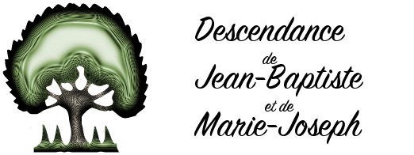
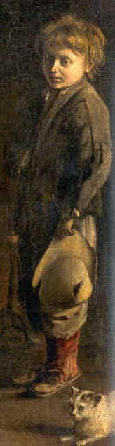
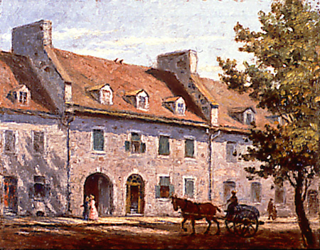

|

Source: Drouin digitized
collection.
MARIE-JOSEPH, born on August 21, 1775, in the Sault-au-Récollet; she
died the same day.
MARIE-JOSEPH, born on August 8, 1776, in the Sault-au-Récollet; her godparents
are François Chauret and Marie-Françoise Lorain.
LOUIS, born on March 10, 1778, in the Sault-au-Récollet; he
died the same day.
 JEAN-BAPTISTE, born on
April 16, 1779, in the Sault-au-Récollet;
his godparents are Jean-Baptiste Monet and Marie-Louise Chauret, wife of
Barthelemy Chanteloup.
He marries Françoise
Loson, daughter of Louis and Marie-Catherine Côté, on October 7, 1805, at
Sainte-Anne-des-Plaines, in the county of Terrebonne.
JACQUES, born on
April 2, 1781, in the Sault-au-Récollet. The baptismal record is in the name of
Louis, but he goes by the name Jacques. His
godparents are Louis Chauret and Marie-Louise Lorrain, the child's uncle and
aunt.
Jacques marries Marie-Amable-Marguerite
Varin dite La Pistole, daughter of Louis, a cooper, and Catherine
Guilbault, on February 26, 1810, at Saint-Laurent de Montréal. The groom's witnesses are Jean-Baptiste and Louis Chauret,
Jacques's brothers. The marriage contract was signed on February 19,
1810, before the notaire (notary) Barron.
He dies on August 5, 1896, and is buried on August 7 in Montréal. He is
88 1/2; his death record gives ten years more.
JACQUES IS OUR ANCESTOR OF THE 6th GENERATION
see the website devoted to him by clicking on the link above, "the 14 generations"
LOUIS-AMABLE, born on September 13, 1782, in the
Sault-au-Récollet; his godparents are Louis Delorme and Marie-Joseph Cadot.
He marries Marie-Louise-Josephte Marçan, daughter of Joseph and Josephte
Guérin, on November 22, 1819, in the parish of Notre-Dame de Montréal. His witness is Jean-Baptiste Chauret.
MARIE-ANNE, born on
February 4, 1784, in the Sault-au-Récollet;
she died on the 6th of the same month and was buried on the 7th.
VÉRONIQUE (twin), born on May 14, 1787, in the
Sault-au-Récollet; her godparents are Philippe Gervais and Véronique
Jeannot.
She died and was buried on the 18th of the same month.
AGATHE (twin), born on May 14, 1787, in the
Sault-au-Récollet; her godparents are Jean Lemay and Agathe Robert.
She
marries Pierre Miville, son of Louis and Josephte Hervieux, on September 27, 1813, in the parish of Notre-Dame de Montréal. The bride's
witness is François Lagarde.
BASILE, born on February 16, 1792,
baptized on the 17th in the Sault-au-Récollet;
his godparents are Jean-Baptiste David and Madeleine Chartrand.
He
marries Marguerite
Lanthier, daughter of François and Marie-Anne Laplante of
Ste-Geneviève, on August 18, 1814, at Saint-Laurent de Montréal. The groom's witness is his brother Jean-Baptiste.
FRANÇOIS, born on May 12, 1796, at Saint-Laurent de
Montréal; his godparents are Louis Joron dit Latulippe and Ursule
Ferlé.
From all this we can conclude that the couple
had eleven children, at least five of whom reached adulthood, four sons and
one daughter. The children were all born in the Sault-au-Récollet except the last, at Saint-Laurent de
Montréal, a neighbouring parish. Jean-Baptiste died there on June 11, 1798.

Rue Notre-Dame, Montréal, in 1818. The Cartier house.
We can assume that a good part of the family moved to Montréal around the turn of the
19th century. Agathe married in 1813 in the parish of Notre-Dame de
Montréal. Jean-Baptiste junior and his brother Louis-Amable lived in the parish of Notre-Dame de
Montréal, where their children's baptismal records are found.
As for our ancestor Jacques, he spent his life
moving house; we will see that later on the site that will be
devoted to him.
Only Basile went on living in the Sault-au-Récollet and
having his children baptized there.

|